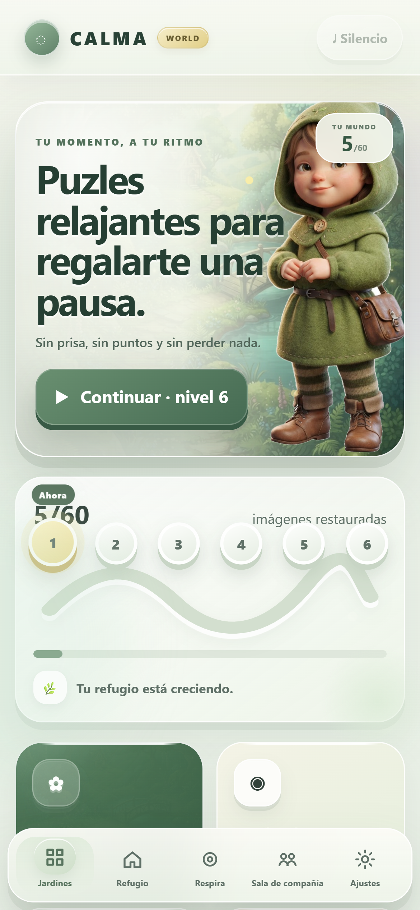

← Volver a trabajo seleccionado
AUTOMATIZACIÓN · INTEGRACIÓN · HOGAR
MIL House
Automatización doméstica orientada a combinar sensores, presencia, reglas y control con una lógica de aceptación progresiva.

Vista del productoQUÉ DEMUESTRA
Capacidades conectadas.
Esta vista resume las áreas que fue necesario combinar para construir el proyecto.
MIL Houseautomatización física
Home AssistantZigbeeSensoresAutomatizacionesLogsGates
Este proyecto muestra integración entre software y entorno físico, con foco en control y aceptación gradual.
Volver al portfolio ↗